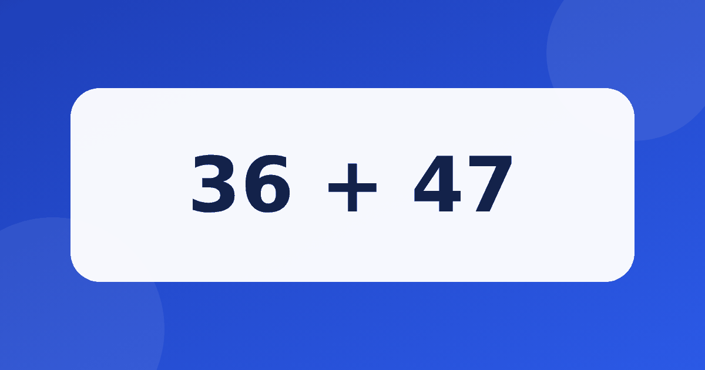

Третий класс: какие вычисления в уме посильны и как их отрабатывать

К третьему классу детям приходится считать в уме заметно больше: появляются трёхзначные числа, табличное умножение и деление, а задачи становятся длиннее. Многие родители замечают, что ребёнок вроде всё понимает, но медленно и неуверенно вычисляет. Разберём, какие навыки обычно входят в устный счёт 3 класс, как их тренировать и сколько времени на это стоит тратить.
Что обычно входит в программу
Точные требования зависят от школы и учебника, поэтому ориентируйтесь на то, что даёт учитель. Как правило, к третьему классу ребёнок работает с числами в пределах тысячи, складывает и вычитает круглые числа, знает табличное умножение и деление и умеет умножать двузначное число на однозначное в простых случаях.
Если вы хотите проверить, как обстоят дела с таблицей, начните с материала как выучить таблицу умножения. Без этой основы устные вычисления с большими числами будут даваться тяжело.
Устный счёт примеры: от простого к сложному
Подборку лучше строить по возрастанию трудности. Приведём несколько примеров по группам.
- Круглые числа: 340 + 250 = 590, 700 − 300 = 400, 480 + 120 = 600.
- Сотни, десятки и единицы по частям: 250 + 375. Сначала 250 + 300 = 550, затем 550 + 75 = 625.
- Табличное деление: 56 ÷ 7 = 8 и 72 ÷ 8 = 9.
- Умножение двузначного на однозначное: 12 × 4 = 48, потому что 10 × 4 = 40 и 2 × 4 = 8. А 15 × 6 = 90, потому что 10 × 6 = 60 и 5 × 6 = 30.
Круглые числа ребёнок считает как однозначные, приписывая нули. Для 340 + 250 он складывает 34 и 25 десятков, то есть получает 59 десятков, значит, 590. Эту мысль полезно проговорить вслух.
Для вычитания трёхзначных чисел работает тот же приём, что и во втором классе. Возьмём 420 − 150. Сначала 420 − 100 = 320, затем 320 − 50 = 270. А для 1000 − 350 удобно вычесть 300 и получить 700, а затем вычесть ещё 50 и получить 650.
Упражнения на устный счёт: короткие и регулярные
Хорошие упражнения на устный счёт занимают не больше десяти минут. Длинные занятия утомляют, а короткие повторения ребёнку проще удержать в голове. Попробуйте такую схему:
Разнообразие помогает не меньше, чем регулярность. Например, в понедельник берём сложение круглых чисел, во вторник вычитание, в среду умножение, в четверг деление, а в пятницу смешанные примеры. Хорошо работает и игра «найди ошибку»: взрослый нарочно называет неверный ответ, скажем 6 × 7 = 48, а ребёнок находит промах и исправляет его.
- Две минуты разминка: пять примеров на сложение и вычитание круглых чисел.
- Пять минут основное задание: три-четыре примера нового типа с разбором вслух.
- Три минуты повторение: вернуться к тому, где вчера была ошибка.
Не требуйте скорости. Для третьеклассника важнее понимать, почему получился именно такой ответ, а темп придёт сам по мере практики. Если страдает вычитание, загляните в статью про вычитание в уме, где показаны основные шаги.
Умножение и деление в уме
Деление в третьем классе стоит учить через умножение. Чтобы найти 56 ÷ 7, ребёнок спрашивает себя: какое число нужно умножить на 7, чтобы получить 56. Ответ 8, потому что 7 × 8 = 56. Чем лучше выучена таблица, тем легче даётся деление.
Круглые числа здесь тоже помогают. Для 40 × 5 считаем 4 × 5 = 20 и приписываем нуль, получаем 200. Для 240 ÷ 4 берём 24 десятка и делим на 4, получаем 6 десятков, то есть 60. Для 300 × 2 берём 3 сотни, умножаем на 2 и получаем 6 сотен, то есть 600.
Как не отбить интерес
Если ребёнок ошибается, не торопитесь исправлять. Спросите: «Как ты считал?» Часто выясняется, что ошибка возникла в одном маленьком шаге, а идея верная. Хвалите именно за ход мысли, а не только за правильный ответ.
Для разнообразия можно использовать тренажёр Устный счёт. В нём есть четыре модуля: состав числа, сложение без перехода, сложение через десяток и вычитание. Числовая лента показывает шаги, а сложные примеры возвращаются на повторение. Личный рекорд в тренажёре считается без таймера на вопросах, так что никто не подгоняет ребёнка. Попробовать можно с модуля «Состав числа», он доступен бесплатно.
Что делать, если ребёнок отстаёт
Не паникуйте. Посмотрите, на каком шаге возникают трудности: в сложении, вычитании или таблице. Вернитесь на ступень ниже и спокойно закрепите её. Вспомните и статью устный счёт в 1 классе: для некоторых детей полезно ненадолго вернуться к самым простым играм со счётом. Через пару недель ежедневных коротких занятий ребёнок, как правило, чувствует себя увереннее.